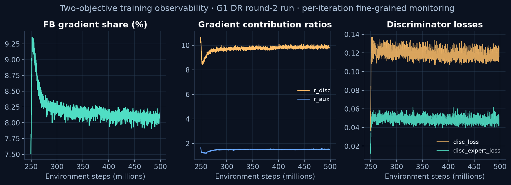
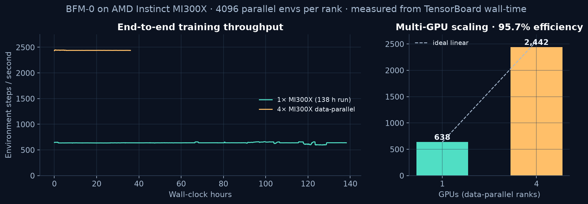
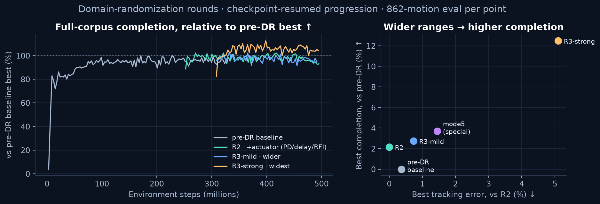
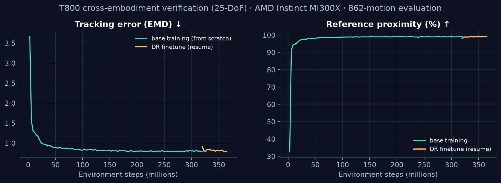

On eight MI300X GPUs, from mocap data to whole-body motion.八卡 MI300X 上， 从动捕数据到全身动作。
Whole-body motion tracking for humanoid robots based on the BFM-0 behavioral foundation model: a single generalist policy network plus a 256-dimensional latent variable specifying the motion, trained on an AMD Instinct MI300X cluster with multiple configs in parallel, periodic full evaluations over 862 motion sequences, dual simulation-backend validation, and a fully connected on-device deployment pipeline. Training throughput and convergence reach parity with this algorithm on NVIDIA platforms.基于 BFM-0 行为基础模型的人形机器人全身运动跟踪：单一通用策略网络 + 256 维隐变量指定动作，在 AMD Instinct MI300X 集群上完成多组配置并行训练、862 条动作序列周期性全量评测、双仿真后端验证与端侧部署链路打通。训练吞吐与收敛效果达到该算法在 NVIDIA 平台上的相当水平。
Multi-GPU parallel training verified in practice多卡并行训练已实测验证On-device export and sim2sim loop fully connected端侧导出与 sim2sim 闭环已打通G1 mainline + T800 cross-embodiment validationG1 主线 + T800 跨本体验证
862862 条motion sequences evaluated in full periodically · ~10–20 min per run动作序列周期性全量评测 · 单次约 10–20 分钟
384M steps3.84 亿步target step magnitude per training run · advanced via checkpoint resume单次训练目标步数量级 · 检查点续训推进
Training Results: Two Independent Configs Both Converge Steadily训练效果：两组独立配置均持续收敛
In BFM-0, representation optimization and discriminator optimization share network parameters and compete with each other, so training quality depends on fine-grained monitoring of the balance between the two. The figure below shows resume-segment evaluation curves for two independent configs on MI300X: tracking error (EMD) keeps decreasing, while reference proximity and standing rate both exceed 99%. Every evaluation covers all 862 motion sequences with no subset sampling.BFM-0 的表征优化与判别器优化共享网络参数并相互竞争，训练质量依赖两路平衡的细粒度监控。下图为两组独立配置在 MI300X 上的续训段评测曲线：跟踪误差（EMD）持续下降，参考贴合率（proximity）与站立保持率均超过 99%。每次评测覆盖全部 862 条动作序列，不做子集抽样。
Run A · domain randomization round 2Run A · 域随机化第二轮
Run B · baseline configRun B · 基线配置
Tracking error vs. resume point跟踪误差相对续训起点
−13.9%
−16.2%
Reference proximity (final)参考贴合率（末次）
99.31%
99.34%
Standing rate (final)站立保持率（末次）
99.11%
99.31%
Resume-segment span续训段跨度
249M steps · 138.2 h2.49 亿步 · 138.2 h
201M steps · 112.2 h2.01 亿步 · 112.2 h
The curves cover the checkpoint-resume segment (starting at 250M steps) and exclude the from-scratch segment; evaluation runs inline within the training process, accounting for roughly 20–22% of wall-clock time, and has been excluded from the throughput figures. Both configs share the same training entry point and evaluation protocol, differing only in config fields. A historical metric-accounting flaw on the evaluation side (two tracking metrics with different meanings once shared an identifier and overwrote each other) has been fixed, and all affected experiments were fully re-evaluated.曲线区间为检查点续训段（2.5 亿步起），不含从零训练段；评测在训练进程内联执行，占墙钟时间约 20–22%，吞吐口径已将其剔除。两组配置共用同一训练入口与评测协议，差异仅在配置字段。评测侧一处历史口径缺陷（两项含义不同的跟踪指标曾共用标识互相覆盖）已修复，受影响的实验全部重新评测取数。
Fine-Grained Monitoring of the Two Competing Objectives双路目标的细粒度监控
Representation optimization (FB) and discriminator optimization share the same set of network parameters and compete with each other; their relative strength directly determines training quality. Throughout training, the FB gradient fraction, the contribution ratio r_disc / r_aux, and the discriminator loss are recorded per iteration, so the balance between the two objectives can be read and tuned directly from the charts instead of being inferred indirectly from the total loss.表征优化（FB）与判别器优化共享同一组网络参数并相互竞争，两路相对强弱直接决定训练质量。训练全程逐迭代记录 FB 梯度占比、贡献比 r_disc / r_aux 与判别器损失，两路平衡可直接读图调节，不再从总损失间接推断。

The decay of the FB gradient fraction from a high initial value to 8–9% is documented, expected behavior for this algorithm (matching the reference implementation golden verbatim), not a defect — the value of monitoring lies precisely in distinguishing "expected decay" from "abnormal suppression": if one objective suppresses the other in mid-to-late training, the total loss may still decrease while the representation has already degraded.FB 梯度占比从高位衰减至 8–9% 是该算法有记录的预期行为（与参考实现 golden 逐字一致），并非缺陷——监控的价值恰在于能把「预期衰减」与「异常压制」区分开：若一路在中后期压制另一路，总损失仍可能下降，而表征已经退化。
12 pairs of side-by-side replays of the same motion on 12 组 G1 (29 DoF)G1（29 自由度） × × T800 (25 DoF)T800（25 自由度）: same mocap motion, same starting point, same duration and frame count, both timelines aligned frame by frame, and both embodiments sharing the same algorithm implementation and config skeleton. Also included: dual simulation-backend comparisons, on-device export comparisons, and domain-randomization robustness demos. Cyan markers indicate reference-motion body points; all 16 clips completed in full with 0 failures.同动作并排回放：同一动捕动作、同一起点、同时长同帧数，两侧时间轴逐帧对齐，两本体共用同一套算法实现与配置骨架。另有双仿真后端对照、端侧导出对照与域随机化鲁棒性演示。青色为参考动作身体点标记；全部 16 段完整完成，0 次失败。
16 / 16All completed in full · 0 failures全部完整完成 · 0 次失败
These videos show tracking performance on specific motions and do not represent the success rate over the full 862-sequence library; overall metrics are in the Training Results section. No readouts are burned into the footage: root/body position errors are recorded per frame in frame_errors.json in each directory, and reproduction commands plus checkpoint hashes are in meta.json. Policies were trained on AMD MI300X; videos were re-rendered on a visualization workstation and are for presentation only.这些视频展示具体动作的跟踪表现，不代表 862 条全库成功率；整体指标见训练效果区。画面未烧录读数：根/身体位置误差逐帧记录于各目录 frame_errors.json，复现命令与检查点哈希见 meta.json。策略训练于 AMD MI300X；视频在可视化工作站上重渲染，仅用于展示。
01 / Fight · Full-Turn Spin01 / 格斗 · 整周转身
G1 · T800 both completed in full · 0 failuresG1 · T800 均完整完成 · 0 次失败 Same motion · same start · 6.00 s · 300 frames同动作 · 同起点 · 6.00 秒 · 300 帧
fightAndSports1_subject4_clip0 · clipped from 3.0sfightAndSports1_subject4_clip0 · 自 3.0s 起截取
Same checkpoint · zero policy-code change同一检查点 · 策略代码零改动 Mean root-trajectory deviation 0.58 cm under large-amplitude motion (fight turn) · 6.00 s大动作幅度（格斗转身）下根轨迹平均偏差 0.58 cm · 6.00 秒
Left MuJoCo · right Motrix · fightAndSports1_subject4_clip0左 MuJoCo · 右 Motrix · fightAndSports1_subject4_clip0
On-device inference path numerically consistent with the training framework端侧推理路径与训练框架数值一致 Root-trajectory deviation 2.1×10⁻⁵ cm · action-output difference 0.001%根轨迹偏差 2.1×10⁻⁵ cm · 动作输出差异 0.001%
Left ONNX on-device inference · right PyTorch training framework · fightAndSports1_subject4_clip0左 ONNX 端侧推理 · 右 PyTorch 训练框架 · fightAndSports1_subject4_clip0
Config & Evidence配置与证据
motion_idx 838 · exported artifact is a self-contained ONNX + config, loaded independently of the training frameworkmotion_idx 838 · 导出产物为自包含 ONNX + 配置，脱离训练框架加载
Full 862 sequences · periodic in-training execution862 条序列全量 · 训练内联周期执行
8-GPU usage8 卡使用方式
Each GPU advances an independent config in parallel各承载一组独立配置并行推进
Measured Throughput and Scaling (1 → 4 GPUs, Data Parallel)实测吞吐与扩展（1 → 4 卡数据并行）
Single-GPU throughput单卡吞吐
638.3 env steps/s · 6.42 s/iter
4-GPU throughput4 卡吞吐
2,442.5 env steps/s · 6.71 s/iter
Scaling speedup扩展加速比
3.83× (95.7% efficiency)3.83×（效率 95.7%）
Gradient sync overhead梯度同步开销
allreduce ~4.53%allreduce 约 4.53%
4-GPU VRAM usage4 卡显存占用
rank0 93.0 GiB · rank1–3 82.6 GiB
4-GPU full-load measurement4 卡满载实测
GPU utilization 97–100% · 714–722 W / 750 WGPU 利用率 97–100% · 714–722 W / 750 W
Throughput is extracted from TensorBoard wall-time as the median of pure training-iteration intervals; evaluation segments (long intervals ≥3× the median) are excluded. A naive accounting that amortizes evaluation time into training is not adopted. Full-load evidence comes from rocm-smi snapshots taken during training.吞吐从 TensorBoard wall-time 提取，取纯训练迭代间隔中位数，评测段（≥3×中位数的长间隔）已剔除；naive 口径会把评测时间摊入训练，不予采用。满载证据为训练期间 rocm-smi 快照。

The difference between single-GPU and multi-GPU training lies in throughput and synchronization design: a single GPU advances independently at 638.3 env steps/s; 4-GPU data parallel synchronizes gradients via allreduce and shares a global batch, sustaining a measured 2,442.5 env steps/s — a 3.83× speedup at 95.7% scaling efficiency with only 4.53% synchronization overhead. Multiple hypothesis configs thereby advance in parallel on 8 MI300X GPUs around the clock, significantly shortening each training round, with hypothesis-validation iteration speed scaling near-linearly with GPU count. A full 862-sequence evaluation takes about 10–20 minutes per run and is the main adjustable item in a training cycle; evaluation frequency is tiered according to experimental goals.单卡与多卡的差别在吞吐与同步设计：单卡以 638.3 env steps/s 独立推进；4 卡数据并行以 allreduce 同步梯度、共享全局 batch，实测 2,442.5 env steps/s 持续稳定输出——加速比 3.83×、扩展效率 95.7%，同步开销仅 4.53%。多组假设配置由此在 8 张 MI300X 上全时段并行推进，单轮训练周期显著缩短，假设验证的迭代速度随卡数近线性放大。862 条全量评测单次约 10–20 分钟，是单次训练周期的主要可调节项，评测频率按实验目的分层设定。
sim2real: Diagnosis Findings and Domain-Randomization Training Iterationssim2real：排查结论与域随机化训练迭代
Previous training applied noise only to observation channels: the policy was robust to sensor noise, but mass, center of mass, contact friction, actuator gains, and response latency remained fixed throughout. Domain randomization is built along three channels and advanced in three progressive rounds — each round targets specific directions from real-robot feedback rather than uniformly widening perturbation ranges, preserving attribution capability.此前训练仅在观测通道施加噪声，策略对传感器噪声具备鲁棒性，但质量、质心、接触摩擦、执行器增益与响应时延全程为固定值。域随机化按三个通道建设，并以三轮递进推进——每轮针对实机反馈的具体方向，而非统一放大扰动幅度，保留归因能力。
Three Randomization Channels三类随机化通道
Actuators执行器: proportional gain ±10–15%, derivative gain ±15–25%, control latency of 1–3 physics substeps (5–15 ms, covering the 50 Hz loop's sense-to-actuate delay), and injected torque noise. ：比例增益 ±10–15%，微分增益 ±15–25%，控制时延 1–3 个物理子步（5–15 ms，覆盖 50 Hz 回路感知到执行延迟），注入力矩噪声。 Contact friction接触摩擦: independent contact priority for the feet; friction coefficients of all 11 load-bearing geometries sampled from distributions, with low-adhesion conditions below 0.6 accounting for 26.43%. ：足底独立接触优先级，全部 11 个承重几何体摩擦系数由分布采样，低于 0.6 的低附着工况占 26.43%。 Mass & CoM质量与质心: link mass ±5–10%, base CoM ±5 cm planar / ±3 cm vertical (equivalent to 23% of single-ankle holding torque, a first-order effect), joint default positions ±0.02 rad, and bounded planar pushes at random 1–3 s intervals.：连杆质量 ±5–10%，基座质心平面 ±5 cm / 竖直 ±3 cm（换算单踝保持力矩占 23%，为一阶影响），关节默认位置 ±0.02 rad，1–3 s 随机间隔有界平面推力。
Three Progressive Rounds and Mutually Exclusive Hypotheses三轮递进与互斥假设
Round 1 applies basic physics randomization; Round 2 opens only the actuator axis (gains, latency, torque noise) with everything else unchanged; Round 3 fully widens the ranges. Separate configs are also built for the forward-lean phenomenon and the transmission-characteristic difference observed on the real robot (the standing inverted-pendulum instability stiffness is 3.7× the stiffness supplied by dual-ankle pitch; the real robot's transmission equivalent inertia is 0.40× that of the training model). All rounds advance via checkpoint resume with observation and action dimensions unchanged. The deployment checkpoint used in this page's videos is exactly the product of Round-2 resume training.第一轮基础物理随机化；第二轮单独打开执行器轴（增益、时延、力矩噪声），其余不变；第三轮全面放宽区间。另针对实机反馈的前倾现象与传动特性差异各建独立配置（站立倒立摆失稳刚度为双踝俯仰供给刚度的 3.7 倍；实机传动等效惯量为训练模型的 0.40 倍）。所有轮次以检查点续训推进，观测与动作维度不变。本页视频所用部署检查点即为第二轮续训产物。
The three phenomena identified on the real robot — standing jitter (systematic gain deviation across the three waist joints), power-on twitch (full gains carried by all-zero commands on self-check channels), and standby forward drift (forward-velocity intent carried by the standby latent variable) — are all manifestations of insufficient training-distribution coverage, not deployment configuration errors; they directly defined the construction directions of the channels above.实机侧定位的三类现象——站立抖动（腰部三关节增益系统性偏差）、上电抽动（自检通道全零指令携带完整增益）、待机前漂（待机隐变量携带前向速度意图）——均为训练分布覆盖不足的表现，而非部署配置错误；它们直接定义了上述通道的建设方向。
Measured Three-Round Progression: The Range-Width ↔ Robustness Trade-off三轮递进实测：区间宽度 ↔ 鲁棒性的权衡
Each round advances via checkpoint resume and is evaluated over the full 862 sequences (a strict criterion from the first frame to the first failure). Measured results match the expected relationship between range width and robustness: the widest-range group (R3-strong) improves full-library completion rate by 12.5% relative to the pre-DR baseline, with the highest initial error and the slowest convergence; the cost is about 5% of tracking accuracy conceded under nominal conditions. This trade-off relationship itself is the basis for choosing deployment configs.各轮配置以检查点续训推进，每轮以 862 条序列全量评测（从首帧至首次失败的严格判据）。实测结果符合区间宽度与鲁棒性的预期关系：区间最宽的一组（R3-strong）全库完成率相对 pre-DR 基线提升 12.5%，起始误差最高、收敛最慢；代价是标称条件下的跟踪精度让渡约 5%。这一权衡关系本身就是部署配置的选择依据。

Config配置
Friction摩擦
Mass质量
Delay / substeps时延 / 子步
Torque noise力矩噪声
Peak completion rate (vs. pre-DR)完成率峰值（相对 pre-DR）
Error vs. R2误差相对 R2
pre-DR baselinepre-DR 基线
—
—
—
—
reference基准
+0.4%
R2 · actuator axisR2 · 执行器轴
—
—
1–3
±10%
+2.2%
reference基准
R3-mild · mild relaxationR3-mild · 温和放宽
0.6–1.5
±7%
0–3
±12%
+2.7%
+0.7%
R3-strong · full relaxationR3-strong · 全放宽
0.35–1.3
±10%
0–4
±15%
+12.5%
+5.1%
Targeted · mode5专项 · mode5
—
—
—
—
+3.7%
+1.4%
The completion-rate column shows the improvement relative to the pre-DR baseline peak (full 862-sequence evaluation, strict criterion from the first frame to the first failure); the error column shows the difference between each config's best EMD and R2's best value. Both R3 groups resume from the R2 checkpoint; the pre-DR baseline is the most recent baseline config without domain randomization. Randomization ranges are taken verbatim from task config files, not chosen empirically.完成率列为相对 pre-DR 基线峰值的提升幅度（862 条全量评测，从首帧至首次失败的严格判据）；误差列为各配置最优 EMD 相对 R2 最优值的差异。R3 两组由 R2 检查点续训；pre-DR 基线为无域随机化的最近基线配置。随机化区间逐字取自任务配置文件，非凭经验取值。
T800: Cross-Embodiment ValidationT800：跨本体验证
T800 has 25 joints (G1 has 29), with different kinematic structure, mass distribution, and actuation characteristics. The two share the same algorithm implementation, config skeleton, and training entry point, with only embodiment-related fields separated. LAFAN1 mocap is mapped motion by motion onto the 25-DoF embodiment using the vendor's official retargeting tool; the 40 motions sharing names with the G1 dataset are sliced into non-overlapping 300-frame segments, yielding 862 training sequences — the same scale as the G1 side, with evaluation-set motion content in exact correspondence.T800 为 25 关节（G1 为 29 关节），运动学结构、质量分布与驱动特性均不同。两者共用同一套算法实现、配置骨架与训练入口，仅本体相关字段分离。LAFAN1 动捕经厂商官方重定向工具逐条映射到 25 自由度本体，取与 G1 数据集同名的 40 条动作、按 300 帧不重叠切片得 862 条训练序列，与 G1 侧规模一致，评测集动作内容完全对应。

T800 completed from-scratch training under the same scaled configuration (324M steps), followed by 50M steps of domain-randomization fine-tuning via checkpoint resume targeting its own characteristics; tracking error (EMD) dropped from 0.912 to 0.786, and sim2sim validation shows smooth motion tracking. The video gallery above contains 12 G1 × T800 same-motion side-by-side replays (same motion, same start, same duration and frame count, timelines aligned frame by frame), visually demonstrating cross-embodiment consistency. The on-device export pipeline is likewise connected, and the real-robot deployment checklist plus a staged test procedure (three stages: stand-suspended, stand-supported, and controlled on-ground, each with pass criteria and rollback conditions) has been prepared.T800 在同一规模化配置下完成从零训练（3.24 亿步），随后针对自身特性以检查点续训完成域随机化微调 5000 万步，跟踪误差（EMD）由 0.912 降至 0.786，sim2sim 验证动作跟踪流畅。上方视频画廊含 12 组 G1 × T800 同动作并排回放（同动作、同起点、同时长同帧数、时间轴逐帧对齐），直观呈现跨本体一致性。端侧导出链路同样打通，实机部署检查清单与分阶段测试流程（支架悬空、支架承重、地面受控三阶段，各设通过判据与回退条件）已整理完毕。